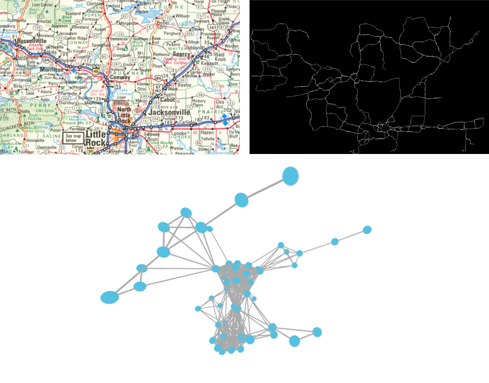

The study of communication networks, specifically road networks, is a topic of broad interest to the scholarly community. It allows researchers to draw conclusions that range from historical events (Antrop, 2004; Trombold, 1991) to transit and traffic (Bash et al., 2017; Yang and Yagar, 1995), while adding a tangible and understandable dimension to their work. The appearance of Geographical Information Systems (GIS) made it possible to perform such analysis efficiently and accurately. It is just recently that the study of topological and growth properties of road networks are giving us the chance of understanding the bigger picture of cities (Antrop, 2005; Kasanko et al., 2016).
In the American landscape, network analysis of road networks has shown evidence that the construction of interstate highways affected the political and geographic polarization of cities, undermining representation and posing a threat to democracy itself (Nall, 2015; Ejdemyr et al., 2005). Most of these studies, however, rely on “the only rigorous year-to-year record of the construction of interstate highways and the incorporation of existing freeways into the system” (Nall, 2018), the Federal Highway Administration PR-511 database (FHWA PR-11). While the FHWA PR-11 is the most complete database available, it is based on highway construction records, which oftentimes misrepresent the complexity of turning political promises into reality, and does not include data on the development of road networks before the interstates. One way to approach this lack of data is to resort to roadmap collections, which might be a better proxy to understand the reality of transportations networks. Unfortunately, despite the number of digitized and scanned map collections, the lack of their availability in standard network data formats still represents a burden for the study of historical road networks. Although network analysis tools exist, we are not able to fully leverage their potential regarding historical datasets without a huge amount of manual work to generate network data.
As an alternative, modern approaches of road extraction from maps promise fully automated methods that rarely generalize well (Mena, 2003, Sharma et al., 2013), or rely on good quality labeled data (Isola et al., 2016), which is non existent or very difficult and costly to gather. We are then left to semi-automated methods where the researcher is guided to enter some crucial information needed for the automated process to start. However, these methods are usually conceived for satellite imagery or raster images of maps, lacking proper support for the variety of style and format found when dealing with collections of historical maps, and producing vector information not in network format. In order to fill this gap, we are presenting Histonets, a web-based platform to assist in the conversion of historical maps into digital networks, turning intersections into nodes and roads into edges.
The platform begins with a login screen, after which each researcher can create a number of collections of images of maps by linking them from IIIF-compliant repositories. Furthermore, researchers are able to create settings for similar images (according to their criteria). Once images are selected, the pipeline for the Histonets platform is comprised of 4 steps: image preparation and cleaning, pattern matching, pathfinding, and graph correction. Cleaning can be fully automated or fine-tuned by adjusting the parameters of several actions to be applied. Once clean, image color depth is reduced by an automatic color clustering algorithm that only needs the final number of colors (defaults to 8).
With the image clean and posterized, the pattern matching step begins. In order to identify intersections and corners that will eventually become the nodes of the graph, researchers must circle around them, and, with a couple of samples, Histonets will try to find other instances in the images, taking into account rotation and orientation of the templates. Identifying roads is done by selecting their colors and a threshold. Areas under a certain threshold are removed as well. A final preview of the resulting graph is shown for the whole image. If the graph complies with the expectations the researcher can start a batch process to apply the same parameters to the whole collection. The tasks can be monitored and canceled. The final result of the process for each image map is a downloadable file in a compatible graph format, including Gephi and GraphML (sees Figure 1).
 Figure 1. Sample of image input (upper left), internal output (upper right), and final graph as produced by Histonets (lower)
Although in early stages, Histonets has already proved to reduce substantially the amount of hours of manual labour, cutting down the time needed to process an entire collection. Moreover, the easy parallelization built-in in Histonets is only limited by the computational resources available, making it easier for cloud or high performance computing center deployments to further boost its performance. However, without a proper benchmarking framework it is still difficult to assess its accuracy and completeness. One of our goals moving forward is to test and measure these factors, and adjust the platform for greater reliability.
While Histonets, as a whole pipeline, is focused specifically on extracting road networks from historical maps, collaborators have already identified uses outside of Political Science or History. As a general low-barrier and user friendly computer vision application, we have shown it to be useful for identifying capital letters in Medieval manuscripts, counting glyphs in Egyptian hieroglyphs, or even identifying architectural features. With its balance between meeting specific research needs and generalizable applicability, Histonets has a bright future as an adaptable tool in the Digital Humanities.